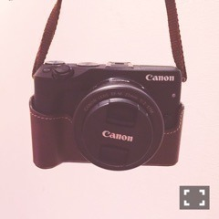
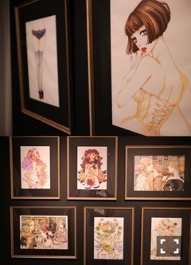
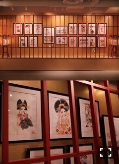

| 2016/09 21 Wed | 斎藤ちはる 私専用(´>∀<｀)ゝ |
ちはるーむへようこそ〜
ついに！！
私も！！
カメラデビュー！！

私専用カメラです(﹡ˆ ˆ﹡)
凄い嬉しい♡♡
形から入るタイプなので
しっかり、ストラップとケースも
買ってしまいました。
傷付けたくないしね！
カメラはCanon EOS M3シリーズ！
初めてのカメラだけど
使いやすいし
色々な機能も付いてて
かっこいい写真が撮れそう！
タッチパネルも動くので
自撮りも出来る( ;o; )嬉しい
そして何より有難いのは
このカメラ自体にWi-Fiがついてるので
いつでもどこでも、
カメラと携帯を繋ぐことができて
すぐに転送することが出来ること！！
撮った写真をすぐ携帯に移して
すぐモバメやブログに載せることも可能◎
嬉しいです〜( ;o; )♡
大切にする( ;o; )♡
毎日持ち歩く！！！
やっぱり画質が良い！
そして光も綺麗！
何より私の髪の毛がとても茶色い！
染めに行かなきゃ(> <)
大学の夏休みがやっと終わって
学校が最近始まったんだけどね、
まさかの初日の最初の授業が
休講になっていて
私それに気付かず学校向かって
教室入ったら誰もいなくて絶望したの。
(この経験ある方？)
だけどカメラがあったからね！！
うっきうきで外に出て
行ってきました！！
安野モヨコ展\( ˆoˆ )/
安野モヨコさんの漫画の歴史や
原画がこれでもか！っていうくらい
展示されていて本当に素敵な空間。

今回の展示会のメインの写真(上)と
世界観がとても好きな写真たち(下)
下の写真、撮ってる私が写ってる...
気がする...

「さくらん」コーナー！
ここだけ和の雰囲気が漂ってて
他とは違う空気感が好きでした。
安野モヨコさんの絵は
女の子の憧れというものが
ぎゅっと凝縮されている感じがする。
目が大きくて
顔が小さくて
スタイルがとても良くて
ファッショナブルで。
安野モヨコさんの漫画を読むのですが
まだまだ読んでない漫画があった事にも
気付けたので時間あるときに読みたいな♪
ずっと行きたいと思ってたけど
行けなさそうだな〜とも思っていたので
ある意味ナイス休講！
でした。
学校来たのに休講だった！
って事ほど憂鬱な事ってないからね。
憂鬱から救ってくれたのも
このカメラと安野モヨコさんのおかげ( ˘ω˘ )
これからはカメラがあるので
毎日が楽しくなりそうです！！
ブログにも沢山載せるつもりです(﹡ˆ ˆ﹡)
-------------------------♡
♬ ChihaMusic
「ハイドアンドブルー」ドラマチックアラスカさん
テンポが好き！
そして歌詞の、
どこか懐かしいような
どこか子供の頃を思い出すような
不思議な雰囲気が惹きこまれる。
かくれんぼしてるときの
ドキドキ感って多分
もっと大人になっても
変わらないんだろうな〜
明日からはアンダーライブ
中国シリーズがいよいよ始まります！
来てくれる皆さん
楽しんでくれたら嬉しいです(﹡ˆ ˆ﹡)
頑張ってくるよ〜！
全力で！！
大きく！！
綺麗に！！
これは去年の今頃のアンダーライブ。
相変わらず前髪の遊び心には
お手上げです。
おやすみ〜
斎藤ちはる